Dipolefit for epilepsy data
Here we are going to do the simplest possible thing with regard to source localization. find a dipole for one epileptic spike, based on the headshape of the subject with a single sphere head model.
Contents
- Find a spike on raw data
- View a movie of the field
- Choose an exact moment for dipole fit
- Make a single sphere model based on the head shape.
- fit a dipole
- show the dipole within the headshape
- Realign the MRI to our MEG
- see results on the MRI.
- plot the timecourse and "field" of the dipole
- auditory
- Now see the fields in a movie
- We may be able to choose better with an iteractive topoplot
- Select channels
- make a local spheres model based on the head shape.
- fit a dipole
- show the dipole within the headshape
- see results on the MRI.
- make timecourses for standard and oddball
Find a spike on raw data
So where is there a spike? See some MEG channels between 90 and 100s. We will later take the one at 99s.
cd epilepsy tracePlot_BIU(90,100,'c,rfhp1.0Hz');
evaluating trialfunction 'trialfun_raw'
reading header...
Warning: READ_HEADER is only a compatibility wrapper, which will soon be removed.
Please instead call FT_READ_HEADER.
applying digital weights in the gradiometer balancing matrix
undoing the Supine balancing
found 1 events
created 1 trials
the call to "ft_definetrial" took 1 seconds and an estimated 0 MB
reading and filtering
applying digital weights in the gradiometer balancing matrix
undoing the Supine balancing
processing channel { 'A22' 'A2' 'A104' 'A241' 'A138' 'A214' 'A71' 'A26' 'A93' 'A39'
reading and preprocessing
reading and preprocessing trial 1 from 1
the call to "ft_preprocessing" took 1 seconds and an estimated 36 MB
sorting channels
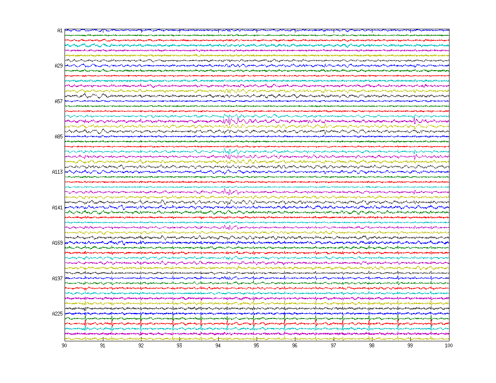 View a movie of the field
We read the last 2 seconds (98-100s). We then pretend the data is power spectrum and use ft_movieplotTFR. Then we make a movie of 90 to 90.2s (200ms movie).
cfg.dataset='c,rfhp1.0Hz'; cfg.trialdef.beginning=98; cfg.trialdef.end=100; cfg.trialfun='trialfun_raw'; % the other usefull trialfun we have are trialfun_beg and trialfun_BIU cfg1=ft_definetrial(cfg); cfg1.bpfilter='yes'; cfg1.bpfreq=[3 90]; cfg1.demean='yes'; cfg1.channel={'MEG','-A74','-A204','MEGREF'}; data=ft_preprocessing(cfg1); % Here we cheat, we see the data as power spectrum. not our fault. data1=ft_timelockanalysis([],data); data1.powspctrm=data1.avg; cfg=[]; cfg.layout='4D248.lay'; cfg.xlim=[99 99.2]; figure; ft_movieplotTFR(cfg,data1);
evaluating trialfunction 'trialfun_raw'
reading header...
Warning: READ_HEADER is only a compatibility wrapper, which will soon be removed.
Please instead call FT_READ_HEADER.
applying digital weights in the gradiometer balancing matrix
undoing the Supine balancing
found 1 events
created 1 trials
the call to "ft_definetrial" took 1 seconds and an estimated 0 MB
applying digital weights in the gradiometer balancing matrix
undoing the Supine balancing
processing channel { 'MLzA' 'MLyA' 'MLzaA' 'MLyaA' 'MLxA' 'A22' 'MLxaA' 'A2' 'MRzA'
reading and preprocessing
reading and preprocessing trial 1 from 1
the call to "ft_preprocessing" took 1 seconds and an estimated 7 MB
the input is raw data with 269 channels and 1 trials
averaging trials
averaging trial 1 of 1
the call to "ft_timelockanalysis" took 0 seconds and an estimated 31 MB
reading layout from file 4D248.lay
the call to "ft_prepare_layout" took 0 seconds and an estimated 31 MB
Warning: Some points fall outside the outline, please consider using another layout
the call to "ft_movieplotTFR" took 0 seconds and an estimated 31 MB
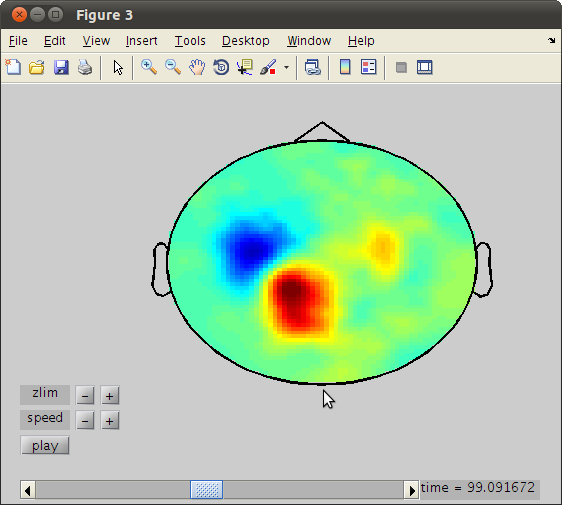 Choose an exact moment for dipole fit
It has to look like a field of a dipole. From watching the movie we choose the peak moment, 99.0917s. Alternatively we can use interactive plot to choose the peak amplitude but let's start with 99.0917.
tSpike=99.0917; cfg.xlim=[tSpike tSpike]; cfg.zlim=[-1.5e-12 1.5e-12]; cfg.interactive='yes'; figure; ft_topoplotER(cfg,data1); % now that we know when the spike occurs we want to localize it.
reading layout from file 4D248.lay the call to "ft_prepare_layout" took 0 seconds and an estimated 0 MB the call to "ft_topoplotTFR" took 0 seconds and an estimated 0 MB the call to "ft_topoplotER" took 0 seconds and an estimated 0 MB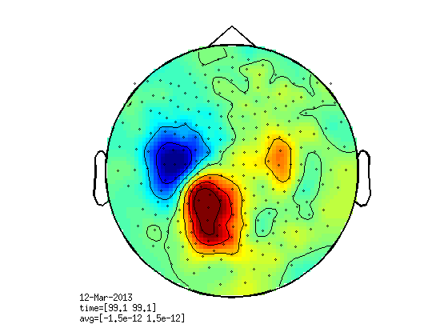
Make a single sphere model based on the head shape.
cfg = []; cfg.feedback = 'no'; cfg.grad = data.grad; cfg.headshape='hs_file'; cfg.singlesphere='yes'; vol = ft_prepare_localspheres_BIU(cfg); showHeadInGrad([],'m'); hold on; ft_plot_vol(vol);
single sphere, center = 0.0031583 0.00011202 0.043607, readius = 0.075455
list =
'c,rfhp1.0Hz'
fileName =
c,rfhp1.0Hz
applying digital weights in the gradiometer balancing matrix
undoing the Supine balancing
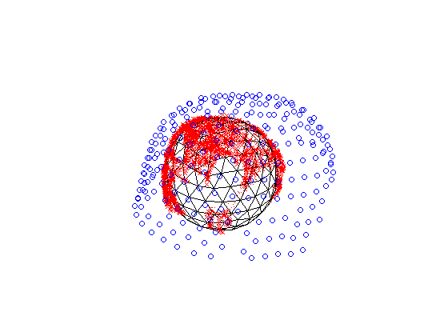 fit a dipole
cfg5 = []; cfg5.latency = [tSpike tSpike]; % specify latency window around M50 peak cfg5.numdipoles = 1; cfg5.vol=vol; cfg5.feedback = 'textbar'; cfg5.gridsearch='yes'; dip = ft_dipolefitting(cfg5, data);
the input is raw data with 269 channels and 1 trials
using headmodel specified in the configuration
using gradiometers specified in the data
selected 269 channels
selected 1 topographies
creating dipole grid based on inward-shifted brain surface from volume conductor model
642 dipoles inside, 0 dipoles outside brain
the call to "ft_prepare_sourcemodel" took 0 seconds and an estimated 0 MB
Warning: The input units are unknown for points and S/unknown for conductivity
scanning grid [------------------------------------------------------------]
found minimum after scanning on grid point [0.00242609 0.0596445 0.0899621]
First-order
Iteration Func-count f(x) Step-size optimality
0 4 0.341922 7.85
1 20 0.323409 0.00189999 8.36
2 24 0.291768 1 3.82
3 28 0.285772 1 1.43
4 32 0.283874 1 0.203
5 36 0.283849 1 0.0428
6 40 0.283847 1 0.0103
7 44 0.283847 1 0.00151
8 48 0.283847 1 0.000128
9 52 0.283847 1 2.73e-06
Local minimum possible.
fminunc stopped because the size of the current step is less than
the default value of the step size tolerance.
found minimum after non-linear optimization on [-0.000550915 0.0532806 0.0800166]
the call to "ft_dipolefitting" took 1 seconds and an estimated 0 MB
show the dipole within the headshape
hs=ft_read_headshape('hs_file'); hsx=hs.pnt(:,1);hsy=hs.pnt(:,2);hsz=hs.pnt(:,3); figure;plot3(hsx,hsy,hsz,'rx');hold on; ft_plot_dipole(dip.dip.pos,dip.dip.mom,'units','m')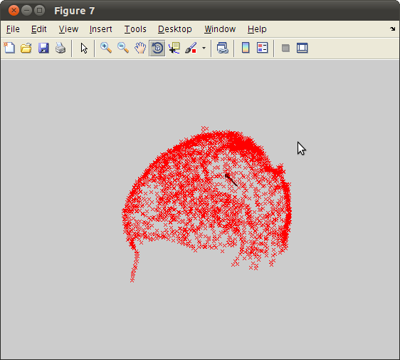
Realign the MRI to our MEG
Now to see the dipole on the MRI first the MRI has to be realigned to the MEG. this is tricky, you have to find the LPA RPA and nasion on the MRI which in this case is of bad quality. let me do it, load mri_realign.
mri=ft_read_mri('epi.nii'); cfg = []; cfg.method = 'interactive'; cfg.coordsys='4d'; mri_realign = ft_volumerealign(cfg,mri); %note here Left is Left!
Rescaling NIFTI: slope = 1, intercept = 0
the input is volume data with dimensions [116 112 75]
1. To change the slice viewed in one plane, either:
a. click (left mouse) in the image on a different plane. Eg, to view a more
superior slice in the horizontal plane, click on a superior position in the
coronal plane, or
b. use the arrow keys to increase or decrease the slice number by one
2. To mark a fiducial position or anatomical landmark, do BOTH:
(this can be done multiple times, until you are satisfied with the positions.
for each type of point, the most recent selection is stored.)
a. select the position by clicking on it in any slice with the left mouse
button
b. identify it by pressing either n/l/r for fiducials, or a/p/z for
anatomical landmarks
3. To change the display:
a. press c or C on keyboard to show/hide crosshair
b. press m or M on keyboard to show/hide marked positions
4. To finalize markers and quit interactive mode, press q on keyboard
============================================================================
voxel 486467, indices [79 50 38], location [47.2 -24.3 12.0]
============================================================================
voxel 421513, indices [85 50 33], location [59.5 -24.0 2.6]
============================================================================
voxel 382541, indices [89 50 30], location [66.1 -24.0 -4.9]
============================================================================
voxel 382767, indices [83 52 30], location [54.4 -19.5 -4.0]
============================================================================
voxel 382887, indices [87 53 30], location [62.9 -18.3 -4.0]
============================================================================
voxel 382074, indices [86 46 30], location [60.5 -32.8 -4.0]
============================================================================
voxel 381842, indices [86 44 30], location [61.7 -36.4 -4.0]
============================================================================
voxel 303891, indices [87 44 24], location [63.3 -36.0 -15.2]
============================================================================
voxel 303892, indices [88 44 24], location [64.2 -36.0 -15.2]
============================================================================
voxel 290899, indices [87 44 23], location [62.4 -36.0 -19.0]
============================================================================
voxel 277905, indices [85 44 22], location [58.6 -36.0 -19.9]
============================================================================
voxel 212947, indices [87 44 17], location [62.4 -36.0 -29.3]
============================================================================
voxel 212948, indices [88 44 17], location [65.2 -36.0 -30.3]
============================================================================
voxel 212949, indices [89 44 17], location [67.1 -36.0 -29.3]
Warning: no coordinate system realignment has been done
the call to "ft_volumerealign" took 39 seconds and an estimated 0 MB
see results on the MRI.
load mri_realign % mind, here Left = Left. cfg6 = []; cfg6.location = 1000*dip.dip.pos(1,:); figure; ft_sourceplot(cfg6, mri_realign);
the input is volume data with dimensions [116 112 75] not downsampling anatomy the call to "ft_volumedownsample" took 0 seconds and an estimated 0 MB no functional parameter no masking parameter voxel 720506, indices [30 52 56], 4d coordinates [-1.3 53.4 80.6] mm scaling anatomy scaling anatomy scaling anatomy Warning: no colorbar possible without functional data nas = undefined lpa = undefined rpa = undefined the call to "ft_sourceplot" took 0 seconds and an estimated 0 MB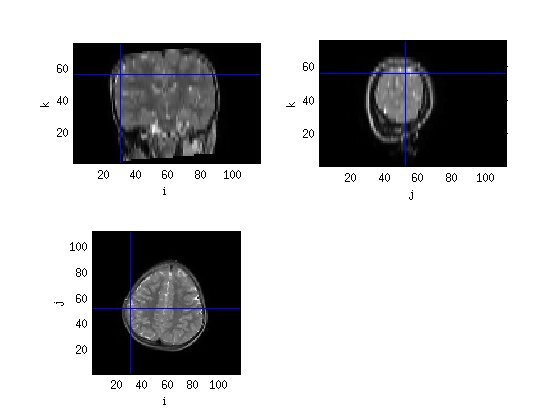
plot the timecourse and "field" of the dipole
dipTimeCourse=dip.dip.pot'*data.trial{1,1}(:,:);
figure;plot(data.time{1,1},dipTimeCourse);
dipWts=data1;
dipWts.avg=dip.dip.pot;
dipWts.time=dip.time;
figure;ft_topoplotER([],dipWts);
creating layout from data.grad creating layout for bti248 system the call to "ft_prepare_layout" took 0 seconds and an estimated 0 MB Warning: Some points fall outside the outline, please consider using another layout Warning: Duplicate x-y data points detected: using average of the z values. the call to "ft_topoplotTFR" took 0 seconds and an estimated 0 MB the call to "ft_topoplotER" took 0 seconds and an estimated 0 MB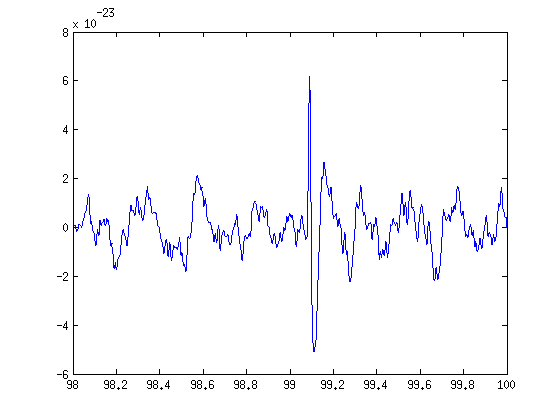 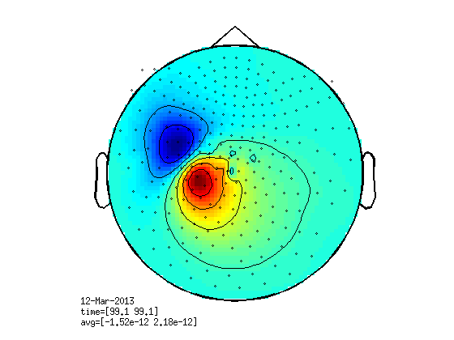
auditory
cd ../oddball source='c,rfhp0.1Hz'; trig=readTrig_BIU(source); trig=clearTrig(trig); cfg=[]; cfg.dataset=source; cfg.trialfun='trialfun_beg'; cfg1=ft_definetrial(cfg); cfg1.channel='X3'; cfg1.hpfilter='yes'; cfg1.hpfreq=110; Aud=ft_preprocessing(cfg1); trigFixed=fixAudTrig(trig,Aud.trial{1,1},[],0.002); % here we enlarge to see that the auditory onsets where correctly detected. trigon=find(trigFixed); trl=trigon'-203; trl(:,2)=trl+1017; trl(:,3)=(-203); trl(:,4)=trigFixed(trigon); % standard %trl=trl(find(trl(:,4)==128),:); cfg.dataset=source; cfg2=ft_definetrial(cfg); cfg2.trl=trl; cfg2.demean='yes'; cfg2.baselinewindow=[-0.2 0]; cfg2.bpfilter='yes'; cfg2.bpfreq=[3 30]; cfg2.channel={'MEG','MEGREF'}; cfg2.feedback='no'; data=ft_preprocessing(cfg2); cfg4.latency=[-0.1 0.6]; cfg4.trials=find(data.trialinfo==128); cfg4.feedback='no'; standard=ft_timelockanalysis(cfg4,data); cfg4.trials=find(data.trialinfo==64); oddball=ft_timelockanalysis(cfg4,data); % save oddball_data oddball standard data
Warning: 50Hz cleaning with cleanMEG pack will not be possible using the new
trigger
evaluating trialfunction 'trialfun_beg'
reading header...
Warning: READ_HEADER is only a compatibility wrapper, which will soon be removed.
Please instead call FT_READ_HEADER.
applying digital weights in the gradiometer balancing matrix
undoing the Supine balancing
found 1 events
created 1 trials
the call to "ft_definetrial" took 1 seconds and an estimated 0 MB
applying digital weights in the gradiometer balancing matrix
undoing the Supine balancing
processing channel { 'X3' }
reading and preprocessing
reading and preprocessing trial 1 from 1
the call to "ft_preprocessing" took 1 seconds and an estimated 0 MB
Warning: 50Hz cleaning with cleanMEG pack will not be possible using the new
trigger
evaluating trialfunction 'trialfun_beg'
reading header...
Warning: READ_HEADER is only a compatibility wrapper, which will soon be removed.
Please instead call FT_READ_HEADER.
applying digital weights in the gradiometer balancing matrix
undoing the Supine balancing
found 1 events
created 1 trials
the call to "ft_definetrial" took 1 seconds and an estimated 0 MB
applying digital weights in the gradiometer balancing matrix
undoing the Supine balancing
processing channel { 'MLzA' 'MLyA' 'MLzaA' 'MLyaA' 'MLxA' 'A22' 'MLxaA' 'A2' 'MRzA'
the call to "ft_preprocessing" took 17 seconds and an estimated 245 MB
the input is raw data with 271 channels and 347 trials
Warning: The option cfg.latency is deprecated, support is no longer guaranteed
selecting 239 trials
selecting 239 trials
the call to "ft_timelockanalysis" took 0 seconds and an estimated 0 MB
the input is raw data with 271 channels and 347 trials
Warning: The option cfg.latency is deprecated, support is no longer guaranteed
selecting 49 trials
selecting 49 trials
the call to "ft_timelockanalysis" took 0 seconds and an estimated 0 MB
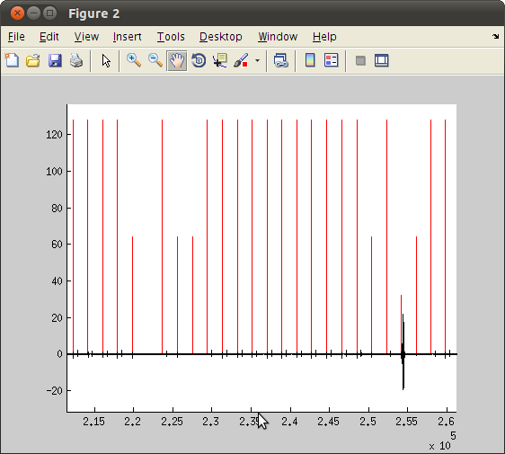 Now see the fields in a movie
standard.powspctrm=standard.avg; cfg=[]; cfg.layout='4D248.lay'; %cfg.xlim=[99 99.2]; figure; ft_movieplotTFR(cfg,standard); % we choose the peak 0.058s t=0.058;
reading layout from file 4D248.lay the call to "ft_prepare_layout" took 0 seconds and an estimated 0 MB Warning: Some points fall outside the outline, please consider using another layout the call to "ft_movieplotTFR" took 0 seconds and an estimated 0 MB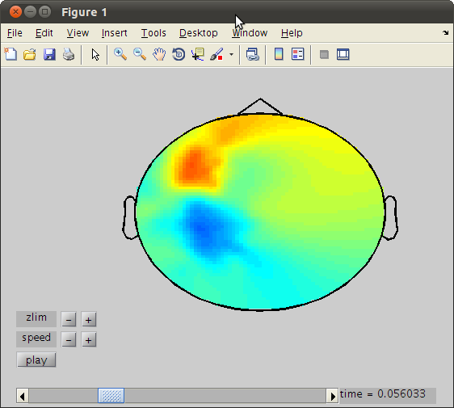
We may be able to choose better with an iteractive topoplot
cfg.xlim=[t t];
cfg.interactive='yes';
figure;
ft_topoplotER(cfg,standard);
reading layout from file 4D248.lay the call to "ft_prepare_layout" took 0 seconds and an estimated 0 MB the call to "ft_topoplotTFR" took 0 seconds and an estimated 0 MB the call to "ft_topoplotER" took 0 seconds and an estimated 0 MB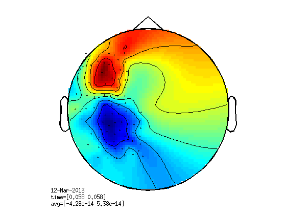
Select channels
%we have to select channels because there are two dipoles. % last click, choose pos and neg channels over the left side of the helmet %then copy the output channels: cfg.channel = {'A1', 'A2',...}; %here, I did it for you. channelSelection = {'A11', 'A26', 'A27', 'A40', 'A41', 'A42', 'A43', 'A44', 'A45', 'A46', 'A47', 'A48', 'A64', 'A65', 'A66', 'A67', 'A68', 'A69', 'A70', 'A71', 'A72', 'A73', 'A74', 'A92', 'A93', 'A94', 'A95', 'A96', 'A97', 'A98', 'A99', 'A100', 'A101', 'A102', 'A103', 'A104', 'A125', 'A126', 'A127', 'A128', 'A129', 'A130', 'A131', 'A132', 'A133', 'A134', 'A135', 'A136', 'A153', 'A154', 'A155', 'A156', 'A157', 'A158', 'A159', 'A160', 'A161', 'A162', 'A163', 'A164', 'A178', 'A179', 'A180', 'A181', 'A182', 'A183', 'A184', 'A196', 'A197', 'A198', 'A199', 'A200', 'A201', 'A213', 'A214', 'A215', 'A216', 'A217', 'A229', 'A230', 'A231', 'A232', 'A233', 'A234', 'A235'};
make a local spheres model based on the head shape.
[vol,grid,mesh,M1]=headmodel_BIU([],[],[],[],'localspheres'); % save headmodel vol grid mesh M1 % note the units, here we work in mm.
evaluating trialfunction 'trialfun_beg'
reading header...
Warning: READ_HEADER is only a compatibility wrapper, which will soon be removed.
Please instead call FT_READ_HEADER.
applying digital weights in the gradiometer balancing matrix
undoing the Supine balancing
found 1 events
created 1 trials
the call to "ft_definetrial" took 1 seconds and an estimated 0 MB
applying digital weights in the gradiometer balancing matrix
undoing the Supine balancing
processing channel { 'TRIGGER' 'RESPONSE' 'MLzA' 'MLyA' 'MLzaA' 'MLyaA' 'MLxA' 'A22' 'MLxaA' 'A2' 'MRzA'
reading and preprocessing
reading and preprocessing trial 1 from 1
the call to "ft_preprocessing" took 1 seconds and an estimated 0 MB
Warning: Colon operands should not be logical.
applying digital weights in the gradiometer balancing matrix
converting units from 'm' to 'mm'
checkmeeg: no channel type, assigning default
checkmeeg: no units, assigning default
checkmeeg: transform type missing, assigning default
checkmeeg: data scale missing, assigning default
checkmeeg: data type is missing or incorrect, assigning default
converting units from 'm' to 'mm'
creating layout from cfg.grad
creating layout for bti248 system
the call to "ft_prepare_layout" took 0 seconds and an estimated 0 MB
converting units from 'm' to 'mm'
undoing the Supine balancing
building scalp volume
undoing the Supine balancing
single sphere, 2562 surface points, center = [11.7 1.9 45.2], radius = 80.7
channel = A22, 529 surface points, center = [ 5.8 -8.4 31.3], radius = 92.5
channel = A2, 556 surface points, center = [ 2.6 2.4 44.3], radius = 80.1
channel = A104, 395 surface points, center = [-8.3 0.4 49.3], radius = 71.7
channel = A241, 143 surface points, center = [-18.3 -2.8 50.1], radius = 63.6
channel = A138, 386 surface points, center = [-11.4 2.4 48.0], radius = 69.5
channel = A214, not enough surface points, using all points
channel = A71, 419 surface points, center = [-1.9 -3.2 50.6], radius = 76.5
channel = A26, 474 surface points, center = [-1.6 0.1 51.3], radius = 74.3
channel = A93, not enough surface points, using all points
channel = A39, not enough surface points, using all points
channel = A125, 424 surface points, center = [22.1 -16.2 34.4], radius = 87.4
channel = A20, 482 surface points, center = [15.6 -3.5 30.5], radius = 86.7
channel = A65, 460 surface points, center = [10.2 -20.4 30.8], radius = 97.6
channel = A9, 550 surface points, center = [ 2.9 -0.0 44.2], radius = 80.4
channel = A8, 561 surface points, center = [ 4.7 -1.2 38.1], radius = 85.4
channel = A95, 493 surface points, center = [ 7.8 -29.2 35.4], radius = 103.3
channel = A114, not enough surface points, using all points
channel = A175, 467 surface points, center = [14.7 33.7 39.1], radius = 101.9
channel = A16, 566 surface points, center = [ 4.8 6.6 37.6], radius = 86.0
channel = A228, 325 surface points, center = [26.7 6.2 36.9], radius = 74.6
channel = A35, 506 surface points, center = [ 9.1 14.6 27.4], radius = 94.8
channel = A191, not enough surface points, using all points
channel = A37, 451 surface points, center = [25.9 2.2 35.3], radius = 76.8
channel = A170, not enough surface points, using all points
channel = A207, not enough surface points, using all points
channel = A112, not enough surface points, using all points
channel = A224, not enough surface points, using all points
channel = A82, 566 surface points, center = [ 4.1 14.2 44.7], radius = 85.2
channel = A238, 128 surface points, center = [-22.9 5.0 46.8], radius = 58.7
channel = A202, 262 surface points, center = [-16.7 2.9 47.4], radius = 64.3
channel = A220, 193 surface points, center = [-21.4 2.3 47.5], radius = 60.6
channel = A28, 464 surface points, center = [-3.1 2.0 49.3], radius = 74.9
channel = A239, 139 surface points, center = [-21.7 1.4 48.6], radius = 60.9
channel = A13, 502 surface points, center = [-1.4 3.4 49.7], radius = 75.3
channel = A165, 352 surface points, center = [-14.8 1.8 48.3], radius = 66.6
channel = A204, 268 surface points, center = [-20.1 1.3 48.0], radius = 61.9
channel = A233, not enough surface points, using all points
channel = A98, 473 surface points, center = [ 2.7 -11.5 47.9], radius = 85.0
channel = A25, 508 surface points, center = [ 0.9 -0.6 49.9], radius = 76.1
channel = A70, 440 surface points, center = [-0.6 -3.2 51.1], radius = 76.7
channel = A72, 413 surface points, center = [-3.3 -2.1 50.4], radius = 75.3
channel = A11, 497 surface points, center = [-1.2 1.0 50.0], radius = 75.1
channel = A47, 435 surface points, center = [-3.8 -0.2 50.9], radius = 73.9
channel = A160, 378 surface points, center = [ 2.5 -16.2 46.7], radius = 89.4
channel = A64, not enough surface points, using all points
channel = A3, 547 surface points, center = [ 4.7 2.2 37.5], radius = 85.5
channel = A177, 330 surface points, center = [26.6 -13.8 34.8], radius = 83.3
channel = A63, not enough surface points, using all points
channel = A155, not enough surface points, using all points
channel = A10, 534 surface points, center = [ 0.7 0.8 48.6], radius = 76.7
channel = A127, not enough surface points, using all points
channel = A67, 538 surface points, center = [ 6.5 -15.9 40.2], radius = 91.4
channel = A115, not enough surface points, using all points
channel = A247, 227 surface points, center = [20.9 10.1 39.5], radius = 79.8
channel = A174, 500 surface points, center = [12.0 38.3 41.7], radius = 106.8
channel = A194, 396 surface points, center = [19.3 25.2 41.0], radius = 93.4
channel = A5, 498 surface points, center = [10.7 2.3 29.8], radius = 89.3
channel = A242, not enough surface points, using all points
channel = A176, 445 surface points, center = [20.0 24.5 36.7], radius = 92.1
channel = A78, 445 surface points, center = [-3.5 6.4 48.8], radius = 76.1
channel = A168, not enough surface points, using all points
channel = A31, 545 surface points, center = [ 0.3 5.1 49.2], radius = 76.6
channel = A223, not enough surface points, using all points
channel = A245, 248 surface points, center = [15.4 31.0 60.6], radius = 106.6
channel = A219, 194 surface points, center = [-20.0 4.2 46.8], radius = 61.1
channel = A12, 501 surface points, center = [-1.5 2.0 49.4], radius = 75.4
channel = A186, 309 surface points, center = [-16.5 1.7 48.3], radius = 65.0
channel = A105, 394 surface points, center = [-9.4 1.5 49.3], radius = 70.7
channel = A222, 227 surface points, center = [-20.9 -1.7 47.5], radius = 60.6
channel = A76, 419 surface points, center = [-6.8 3.1 49.9], radius = 72.4
channel = A50, 432 surface points, center = [-4.2 3.4 49.2], radius = 74.5
channel = A188, 345 surface points, center = [-17.4 0.7 48.0], radius = 64.1
channel = A231, not enough surface points, using all points
channel = A45, 460 surface points, center = [-0.7 -1.0 51.6], radius = 74.9
channel = A180, not enough surface points, using all points
channel = A99, 433 surface points, center = [ 0.8 -9.7 48.8], radius = 82.9
channel = A234, 134 surface points, center = [-6.6 2.8 43.8], radius = 70.1
channel = A215, not enough surface points, using all points
channel = A235, 110 surface points, center = [-12.2 6.8 45.7], radius = 65.5
channel = A181, not enough surface points, using all points
channel = A38, not enough surface points, using all points
channel = A230, 202 surface points, center = [20.6 -21.3 38.8], radius = 92.1
channel = A91, 429 surface points, center = [34.8 -1.4 36.1], radius = 70.4
channel = A212, 297 surface points, center = [27.6 -7.8 34.7], radius = 77.9
channel = A24, 550 surface points, center = [ 3.5 -2.6 45.3], radius = 80.4
channel = A66, 510 surface points, center = [ 6.7 -21.5 34.0], radius = 98.4
channel = A42, 553 surface points, center = [ 5.9 -10.4 38.8], radius = 88.5
channel = A96, 523 surface points, center = [ 6.5 -26.6 39.4], radius = 100.4
channel = A57, 543 surface points, center = [ 6.9 20.1 32.0], radius = 95.7
channel = A86, not enough surface points, using all points
channel = A56, 566 surface points, center = [ 5.8 16.4 37.6], radius = 90.3
channel = A116, not enough surface points, using all points
channel = A151, 416 surface points, center = [36.4 5.6 35.5], radius = 69.8
channel = A141, 423 surface points, center = [-1.1 11.4 45.4], radius = 81.5
channel = A120, 414 surface points, center = [38.2 3.2 36.8], radius = 67.3
channel = A189, not enough surface points, using all points
channel = A80, 505 surface points, center = [-0.5 8.9 48.2], radius = 79.1
channel = A210, 373 surface points, center = [ 9.7 22.8 48.5], radius = 93.7
channel = A143, not enough surface points, using all points
channel = A113, not enough surface points, using all points
channel = A27, 462 surface points, center = [-3.0 0.6 50.3], radius = 74.4
channel = A137, 368 surface points, center = [-11.0 1.3 48.1], radius = 69.8
channel = A135, 356 surface points, center = [-5.3 -3.4 47.1], radius = 76.1
channel = A167, 390 surface points, center = [-12.3 2.8 47.9], radius = 68.8
channel = A75, 416 surface points, center = [-7.3 1.8 50.4], radius = 71.7
channel = A240, 140 surface points, center = [-21.7 -1.3 49.5], radius = 61.1
channel = A206, 298 surface points, center = [-19.4 -1.2 47.2], radius = 61.8
channel = A107, 414 surface points, center = [-7.3 4.4 48.4], radius = 73.0
channel = A130, not enough surface points, using all points
channel = A100, 402 surface points, center = [ 0.5 -9.9 48.1], radius = 83.2
channel = A43, 549 surface points, center = [ 4.6 -6.1 44.8], radius = 82.5
channel = A200, 263 surface points, center = [-9.7 0.5 45.8], radius = 70.3
channel = A102, 393 surface points, center = [-2.6 -4.7 48.0], radius = 78.3
channel = A132, 392 surface points, center = [ 3.3 -18.6 46.0], radius = 91.8
channel = A183, 310 surface points, center = [-7.3 -3.2 47.3], radius = 74.4
channel = A199, 284 surface points, center = [-5.7 -2.2 45.7], radius = 74.3
channel = A122, 417 surface points, center = [41.8 1.0 35.5], radius = 64.6
channel = A19, not enough surface points, using all points
channel = A62, 433 surface points, center = [33.7 0.1 37.0], radius = 70.5
channel = A21, 489 surface points, center = [ 9.4 -8.0 28.1], radius = 92.9
channel = A229, 177 surface points, center = [30.0 -1.3 29.2], radius = 70.2
channel = A84, 542 surface points, center = [ 7.8 24.3 35.1], radius = 96.7
channel = A213, not enough surface points, using all points
channel = A55, 582 surface points, center = [ 3.9 10.3 44.8], radius = 82.4
channel = A32, 578 surface points, center = [ 3.1 7.5 44.7], radius = 81.0
channel = A85, not enough surface points, using all points
channel = A146, not enough surface points, using all points
channel = A58, 504 surface points, center = [ 8.8 21.2 28.3], radius = 97.8
channel = A60, 453 surface points, center = [23.2 6.6 33.5], radius = 80.3
channel = A88, 422 surface points, center = [32.5 4.3 36.6], radius = 71.9
channel = A79, 476 surface points, center = [-1.5 8.2 48.0], radius = 78.4
channel = A169, not enough surface points, using all points
channel = A54, 557 surface points, center = [ 1.4 7.5 48.1], radius = 78.7
channel = A203, 260 surface points, center = [-18.2 2.4 47.9], radius = 63.4
channel = A145, not enough surface points, using all points
channel = A103, 397 surface points, center = [-5.6 -1.8 48.5], radius = 74.7
channel = A163, 334 surface points, center = [-10.3 -0.6 47.8], radius = 70.9
channel = A139, 401 surface points, center = [-9.6 3.8 47.7], radius = 71.3
channel = A49, 433 surface points, center = [-4.5 1.8 49.6], radius = 73.9
channel = A166, 372 surface points, center = [-13.9 2.1 48.1], radius = 67.3
channel = A156, not enough surface points, using all points
channel = A128, not enough surface points, using all points
channel = A68, 530 surface points, center = [ 5.1 -11.0 45.2], radius = 85.7
channel = A159, not enough surface points, using all points
channel = A236, 114 surface points, center = [-15.8 7.0 45.4], radius = 63.0
channel = A161, 352 surface points, center = [ 0.4 -11.3 46.4], radius = 84.6
channel = A121, 413 surface points, center = [42.1 1.9 35.5], radius = 64.3
channel = A4, 524 surface points, center = [ 6.5 2.8 32.1], radius = 89.4
channel = A61, 428 surface points, center = [35.4 2.0 37.5], radius = 68.9
channel = A6, 496 surface points, center = [10.1 -2.6 29.6], radius = 90.1
channel = A126, not enough surface points, using all points
channel = A14, 540 surface points, center = [ 0.3 3.8 48.3], radius = 76.8
channel = A94, not enough surface points, using all points
channel = A15, 571 surface points, center = [ 2.7 4.7 44.7], radius = 80.0
channel = A193, 448 surface points, center = [16.5 24.0 44.2], radius = 93.5
channel = A150, 432 surface points, center = [28.7 12.1 35.1], radius = 78.6
channel = A227, 356 surface points, center = [20.6 8.9 41.4], radius = 79.4
channel = A59, not enough surface points, using all points
channel = A36, not enough surface points, using all points
channel = A225, not enough surface points, using all points
channel = A195, 342 surface points, center = [24.8 18.6 36.9], radius = 85.4
channel = A30, 494 surface points, center = [-1.8 4.7 49.8], radius = 75.5
channel = A109, 440 surface points, center = [-0.5 11.0 45.5], radius = 81.6
channel = A172, 475 surface points, center = [ 8.0 29.2 46.5], radius = 98.8
channel = A108, 428 surface points, center = [-4.0 7.1 47.0], radius = 76.9
channel = A81, 542 surface points, center = [ 1.0 9.8 47.8], radius = 80.3
channel = A171, 420 surface points, center = [ 3.9 20.4 46.7], radius = 90.3
channel = A218, 192 surface points, center = [-18.1 5.6 45.5], radius = 61.7
channel = A173, 488 surface points, center = [10.4 37.2 45.4], radius = 106.2
channel = A201, 255 surface points, center = [-13.0 2.0 46.6], radius = 67.4
channel = A74, 421 surface points, center = [-6.3 0.5 50.1], radius = 72.7
channel = A29, 460 surface points, center = [-2.8 3.8 49.2], radius = 75.2
channel = A164, 342 surface points, center = [-13.3 1.0 48.2], radius = 67.9
channel = A205, 284 surface points, center = [-20.1 -0.0 47.7], radius = 61.7
channel = A232, not enough surface points, using all points
channel = A69, 481 surface points, center = [ 1.9 -5.0 49.6], radius = 79.1
channel = A157, not enough surface points, using all points
channel = A97, 516 surface points, center = [ 5.3 -18.9 44.1], radius = 92.5
channel = A217, 193 surface points, center = [-14.9 6.1 44.2], radius = 63.3
channel = A101, 391 surface points, center = [-0.1 -8.4 47.6], radius = 82.0
channel = A124, 421 surface points, center = [32.3 -5.1 35.2], radius = 74.1
channel = A40, 477 surface points, center = [ 9.9 -13.8 29.2], radius = 94.6
channel = A123, 422 surface points, center = [38.2 -0.9 35.5], radius = 67.9
channel = A153, 422 surface points, center = [22.2 -17.7 35.0], radius = 88.4
channel = A178, 356 surface points, center = [19.1 -26.5 37.9], radius = 97.0
channel = A1, 533 surface points, center = [ 0.2 2.2 48.7], radius = 76.3
channel = A179, not enough surface points, using all points
channel = A33, 573 surface points, center = [ 5.1 11.2 37.5], radius = 87.7
channel = A147, not enough surface points, using all points
channel = A117, 466 surface points, center = [16.4 24.1 33.7], radius = 93.8
channel = A148, 486 surface points, center = [ 9.5 40.3 33.8], radius = 109.7
channel = A87, 442 surface points, center = [25.7 9.4 34.6], radius = 79.2
channel = A89, 414 surface points, center = [39.8 1.9 37.0], radius = 65.9
channel = A243, not enough surface points, using all points
channel = A119, 414 surface points, center = [34.1 6.1 36.3], radius = 71.5
channel = A52, 475 surface points, center = [-2.4 5.6 49.6], radius = 75.7
channel = A142, not enough surface points, using all points
channel = A211, 390 surface points, center = [12.5 24.1 47.3], radius = 94.6
channel = A190, not enough surface points, using all points
channel = A53, 513 surface points, center = [-1.1 6.0 49.8], radius = 76.3
channel = A192, 327 surface points, center = [-1.2 10.9 45.7], radius = 80.5
channel = A73, 424 surface points, center = [-5.0 -0.7 50.2], radius = 73.9
channel = A226, 236 surface points, center = [-1.1 5.8 45.6], radius = 76.3
channel = A136, 357 surface points, center = [-9.3 -0.1 47.7], radius = 71.6
channel = A184, 299 surface points, center = [-12.3 0.4 47.8], radius = 68.9
channel = A51, 441 surface points, center = [-3.9 4.7 49.6], radius = 74.7
channel = A237, 131 surface points, center = [-19.6 6.9 46.1], radius = 60.5
channel = A77, 422 surface points, center = [-5.7 4.5 49.5], radius = 73.6
channel = A129, not enough surface points, using all points
channel = A131, 416 surface points, center = [ 3.1 -20.8 45.9], radius = 93.6
channel = A198, not enough surface points, using all points
channel = A197, not enough surface points, using all points
channel = A182, 329 surface points, center = [-3.1 -7.7 47.2], radius = 80.0
channel = A46, 440 surface points, center = [-2.5 -0.7 51.6], radius = 74.2
channel = A92, 429 surface points, center = [28.8 -6.0 35.2], radius = 76.8
channel = A41, 518 surface points, center = [ 6.4 -14.7 32.0], radius = 95.0
channel = A90, 429 surface points, center = [39.0 0.8 36.8], radius = 66.6
channel = A7, 522 surface points, center = [ 5.9 -2.4 31.8], radius = 90.2
channel = A23, 553 surface points, center = [ 4.9 -5.6 38.0], radius = 86.8
channel = A83, 566 surface points, center = [ 6.5 19.3 40.0], radius = 91.0
channel = A154, 439 surface points, center = [15.1 -30.5 36.5], radius = 101.8
channel = A34, 545 surface points, center = [ 5.8 14.7 29.9], radius = 94.4
channel = A17, 540 surface points, center = [ 6.8 7.7 31.7], radius = 90.3
channel = A18, 505 surface points, center = [10.4 7.8 29.4], radius = 90.5
channel = A248, 222 surface points, center = [25.6 6.7 34.5], radius = 74.4
channel = A149, 453 surface points, center = [17.3 26.4 34.2], radius = 95.0
channel = A118, 441 surface points, center = [26.1 12.6 35.3], radius = 80.3
channel = A208, not enough surface points, using all points
channel = A152, 402 surface points, center = [41.0 2.8 35.9], radius = 65.3
channel = A140, 413 surface points, center = [-5.8 6.7 46.8], radius = 75.5
channel = A144, not enough surface points, using all points
channel = A209, 320 surface points, center = [ 2.8 11.8 46.2], radius = 82.3
channel = A110, 467 surface points, center = [ 1.1 14.0 44.9], radius = 84.6
channel = A111, not enough surface points, using all points
channel = A244, 218 surface points, center = [ 6.3 13.0 52.1], radius = 86.8
channel = A185, 308 surface points, center = [-15.0 1.5 48.1], radius = 66.3
channel = A246, 253 surface points, center = [16.1 18.5 50.5], radius = 91.5
channel = A162, 347 surface points, center = [-5.5 -4.4 47.3], radius = 76.4
channel = A106, 399 surface points, center = [-9.3 2.7 49.2], radius = 70.8
channel = A187, 326 surface points, center = [-18.0 1.2 48.3], radius = 63.7
channel = A48, 435 surface points, center = [-4.2 0.5 49.9], radius = 74.2
channel = A221, 212 surface points, center = [-22.3 0.3 47.8], radius = 60.0
channel = A196, not enough surface points, using all points
channel = A133, 377 surface points, center = [ 2.9 -14.4 45.5], radius = 88.5
channel = A158, not enough surface points, using all points
channel = A44, 508 surface points, center = [ 2.0 -2.5 49.5], radius = 77.4
channel = A134, 368 surface points, center = [ 0.0 -9.1 46.0], radius = 83.1
channel = A216, 209 surface points, center = [-11.7 5.9 43.1], radius = 64.9
channel = MLzA, not enough surface points, using all points
channel = MLyA, not enough surface points, using all points
channel = MLzaA, not enough surface points, using all points
channel = MLyaA, not enough surface points, using all points
channel = MLxA, not enough surface points, using all points
channel = MLxaA, not enough surface points, using all points
channel = MRzA, not enough surface points, using all points
channel = MRxA, not enough surface points, using all points
channel = MRzaA, not enough surface points, using all points
channel = MRxaA, not enough surface points, using all points
channel = MRyA, not enough surface points, using all points
channel = MCzA, not enough surface points, using all points
channel = MRyaA, not enough surface points, using all points
channel = MCzaA, not enough surface points, using all points
channel = MCyA, not enough surface points, using all points
channel = GzxA, not enough surface points, using all points
channel = MCyaA, not enough surface points, using all points
channel = MCxA, not enough surface points, using all points
channel = MCxaA, not enough surface points, using all points
channel = GyyA, not enough surface points, using all points
channel = GzyA, not enough surface points, using all points
channel = GxxA, not enough surface points, using all points
channel = GyxA, not enough surface points, using all points
the call to "ft_prepare_localspheres_mm" took 5 seconds and an estimated 0 MB
undoing the Supine balancing
single sphere, 2562 surface points, center = [11.7 1.9 45.2], radius = 80.7
creating dipole grid based on user specified 3D grid
3480 dipoles inside, 795 dipoles outside brain
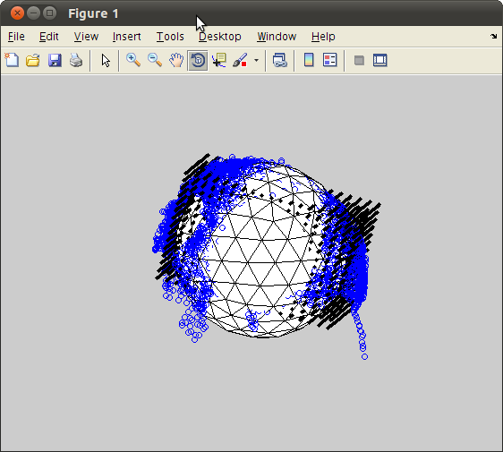 fit a dipole
cfg5 = []; cfg5.latency = [t t]; % specify latency window around M50 peak cfg5.numdipoles = 1; %cfg.symmetry='x'; cfg5.vol=vol; cfg5.feedback = 'textbar'; cfg5.gridsearch='yes'; cfg5.grad=ft_convert_units(standard.grad,'mm'); %cfg5.resolution = 0.1; % cfg5.grid.xgrid=-75:-30; % cfg5.grid.ygrid=75:-1:-105; % cfg5.grid.zgrid=90:-1:-50; cfg5.grid=grid; cfg5.channel=channelSelection; dip = ft_dipolefitting(cfg5, standard);
converting units from 'm' to 'mm'
the input is timelock data with 85 channels and 1018 timebins
using headmodel specified in the configuration
Your data and configuration allow for multiple sensor definitions.
Warning: using gradiometers specified in the configuration\n
selected 85 channels
selected 1 topographies
creating dipole grid based on user specified dipole positions
3480 dipoles inside, 795 dipoles outside brain
the call to "ft_prepare_sourcemodel" took 0 seconds and an estimated 0 MB
Warning: The input units are unknown for points and S/unknown for conductivity
scanning grid [------------------------------------------------------------]
found minimum after scanning on grid point [5.43305 51.2946 42.1069]
First-order
Iteration Func-count f(x) Step-size optimality
0 4 0.0516929 0.00281
1 16 0.0508105 91 0.00242
2 20 0.0469312 1 0.000572
3 24 0.0465 1 0.000531
4 28 0.0459368 1 0.000128
5 32 0.0459285 1 4.99e-05
6 36 0.0459255 1 3.51e-05
7 40 0.0459228 1 3.01e-05
8 44 0.0459222 1 1.26e-05
9 48 0.0459221 1 1.59e-06
10 52 0.0459221 1 5.97e-08
11 56 0.0459221 1 2.32e-09
12 60 0.0459221 1 3.49e-10
Local minimum found.
Optimization completed because the size of the gradient is less than
the selected value of the function tolerance.
found minimum after non-linear optimization on [4.00423 53.0379 46.2855]
the call to "ft_dipolefitting" took 10 seconds and an estimated 0 MB
show the dipole within the headshape
hs=ft_read_headshape('hs_file'); hs=ft_convert_units(hs,'mm'); hsx=hs.pnt(:,1);hsy=hs.pnt(:,2);hsz=hs.pnt(:,3); figure;plot3(hsx,hsy,hsz,'rx');hold on; ft_plot_dipole(dip.dip.pos,dip.dip.mom,'units','mm')
converting units from 'm' to 'mm'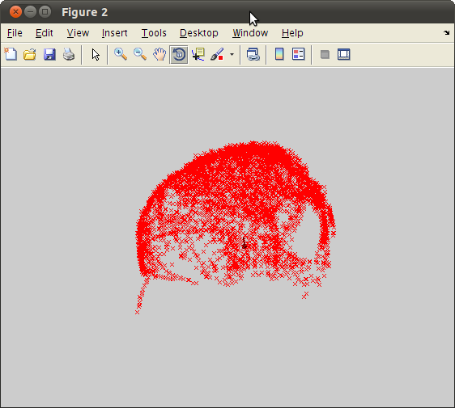
see results on the MRI.
here we load a template MRI and reorient it according to the headshape.
load ~/ft_BIU/matlab/files/sMRI.mat mri_realign=sMRI; mri_realign.transform=inv(M1)*sMRI.transform; % mind, here Left = Right. cfg6 = []; cfg6.location = dip.dip.pos(1,:); figure; ft_sourceplot(cfg6, mri_realign);
the input is volume data with dimensions [91 109 91] not downsampling anatomy the call to "ft_volumedownsample" took 0 seconds and an estimated 7 MB no functional parameter no masking parameter voxel 341782, indices [77 50 35], location [3.9 52.9 47.0] mm scaling anatomy scaling anatomy scaling anatomy Warning: no colorbar possible without functional data nas = undefined lpa = undefined rpa = undefined the call to "ft_sourceplot" took 0 seconds and an estimated 7 MB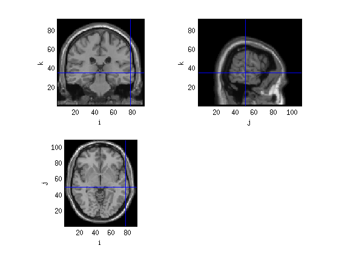
make timecourses for standard and oddball
we first create new avg only with the relevant channels (L for Left)
cfg4.channel=channelSelection;
cfg4.trials=find(data.trialinfo==128);
stL=ft_timelockanalysis(cfg4,data);
cfg4.trials=find(data.trialinfo==64);
oddL=ft_timelockanalysis(cfg4,data);
TCstandard=dip.dip.pot'*stL.avg;
TCoddball=dip.dip.pot'*oddL.avg;
figure;
plot(data.time{1,1},TCstandard);
hold on;
plot(data.time{1,1},TCoddball,'r');
the input is raw data with 271 channels and 347 trials Warning: The option cfg.latency is deprecated, support is no longer guaranteed selecting 239 trials selecting 239 trials the call to "ft_timelockanalysis" took 0 seconds and an estimated 0 MB the input is raw data with 271 channels and 347 trials Warning: The option cfg.latency is deprecated, support is no longer guaranteed selecting 49 trials selecting 49 trials the call to "ft_timelockanalysis" took 0 seconds and an estimated 0 MB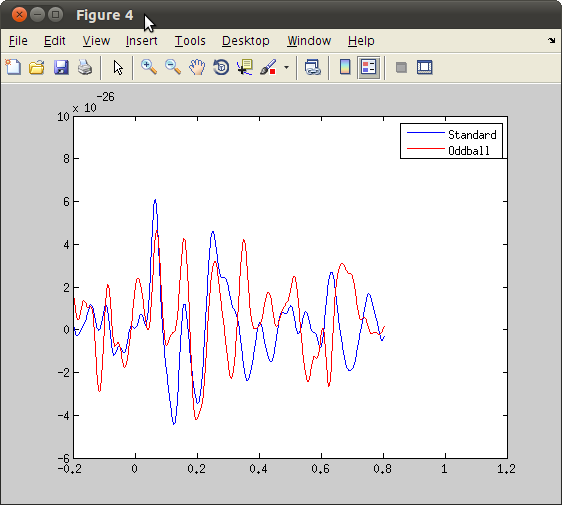